workingvdem <- tibble(vdem) |>
filter(year > 1975) |>
group_by(country_text_id) |>
arrange(year) |>
mutate(diff_polyarchy = v2x_polyarchy - lag(v2x_polyarchy)) |>
# Backsliding boolean variable.
# I'm quantitatively defining it as having decreased in electoral
# democracy score by more than .005 and having decreased by at
# least 0.03 in the last two years.
# I also filtered so that the regime has to be at least some semblance
# of an electoral autocracy (at least) so that hard autocracies getting
# more autocratic aren't included.
mutate(backslided = (diff_polyarchy < -0.005) &
(v2x_regime_amb > 2) &
(lag(v2x_polyarchy, 2) - v2x_polyarchy > 0.03)) |>
# Filling it out
mutate(backslided = (diff_polyarchy < -0.001) &
(backslided |
((lag(backslided) & lag(backslided, 2))|
lead(backslided) & lag(backslided) |
lead(backslided, 2) & lead(backslided)))) |>
ungroup() |>
filter(year > 2009) |>
arrange(country_text_id) |>
select(country_name,
country_text_id,
year,
v2x_polyarchy,
v2x_libdem,
v2x_regime_amb,
diff_polyarchy,
backslided)Intoduction
Democratic backsliding has increasingly taken hold of the world, with the Varieties of Democracy (V-DEM) 2024 Democracy Report identifying 28 cases of backsliding in democracies, 13 of which having reverted to autocracies since the episode began.1 As backsliding occurs within democracies with elected leaders, there is seemingly popular support against democracy in these countries — at least given the results of these elections. So, what shifts in an electorate’s values are the most important to backsliding, and can we use machine learning techniques to predict the onset of backsliding?
In this paper, I plan to inspect if the wave of autocratization in democracies is the result of a shift in values against democracy, and which values are the most important for the shift to autocracy. As the number of cases of backsliding increases, it becomes increasingly important to understand why people would vote for actors that seek to challenge the core foundation of democratic institutions; with this knowledge, we may be able to further understand when cases of backsliding can happen.
First, I will be summarizing existing literature on democratic backsliding, identifying the tension in what causes backsliding. Then, I will conduct some exploratory data analysis and model fitting of my dataset, using Lasso to identify notable variables. Finally, I will discuss if these variables have importance in conducting future research.
Existing Literature
Over the past twenty-five years, there has been considerable discussion about the causes of democratic backsliding - defined generally as the gradual breakdown of democratic institutions through nonviolent — and often, legal — means.2 Most discussions claim polarization is the core idea behind why democracies denigrate, but little is known about the shifts in values to why it happens.
Haggard and Kaufman (2021a) discuss backsliding through the lens of dysfunction of a lack of trust in institutions, which permit autocrats to capture the executive.3 These scholars point to an overall frustration with the system leading to polarization, as anti-system actors may be able to succeed in taking power if the population has no faith that the system will perform well with them. Other literature seems to correlate parts of this claim, with Cooley and Nexon (2020) arguing that these are akin to a “counter-order” movement, made in rejection to the liberal system of ordering.4 Generally, these scholars agree that movements and politicians rejecting the structure of governance as it stands currently obtain success, with Haggard and Kaufman finding it is due to dissatisfaction in institutions.
However, Carothers and Press (2022) expand on this discussion, first limiting their discussion to the Global South and post-communist Europe, and delivering three separate categories of democratic backsliding, all of which create differing interpretations of the values behind backsliding. They state that backsliding can be caused by grievance-fueled illiberalism, agreeing with future literature that frustrations in institutions can drive backsliding; opportunistic authoritarianism, where autocrats act as political entrepreneurs to obtain power; and entrenched-interest revanchinism, where an interest group uses undemocratic means to reassert its claim.5 Carothers and Press’s framework gives an idea for the potential variance in the viewpoints behind backsliding, claiming it is not as simple as people being mad about institutions failing them.
An additional perspective claims that backsliding isn’t domestic in nature, but international. One such scholar, Anna Meyerrose (2020; 2021), finds that instead of backsliding being triggered by domestic parties, that international organizations (IOs) are to blame. She claims that because IOs focus on elections and an increase in executive power in their democracy promotion, in addition to removing some areas of policy for political parties to divide on, potential autocrats have an easier time gaining and maintaining power.6 Deviating from other arguments, this branch of literature finds that while there may be domestic issues, structural problems make backsliding much more likely. As a result, backsliding may have nothing to do with values populations have.
I intend to put these differing claims to the test. While I expect that grievances with institutions play a not insignificant role in democratic backsliding, I do expect there to be variance in how much of a role it plays. Some states may backslide due to structural issues, or for electing a leader who at first may adhere to democratic norms, but then turn against the system later in their term.
Data
I plan to utilize the World Values Survey’s (WVS) seventh wave of data to account for the values I plan to inspect, pairing the averages of responses with the correlating electoral democracy scores found in the Varieties of Democracy’s (V-DEM) data set.
While both are relatively large sources of data, combining the two results in just 62 observations; since WVS uses different questions between years, I cannot discuss it over time, leading to, unfortunately, a rather limited amount of data to analyze. Despite this, there are few other limitations between the two data sets. Both plot their results on a scale, meaning there are no significant outlying values, and they are both trusted sources of data used across the literature.
While I will focus on all questions in the WVS data, I plan on focusing on the electoral democracy and regime scores in the V-DEM data set. The electoral democracy index seeks to identify the structural components in a democracy; that is, are elections free and fair, and are the rights required for democratic rule generally followed? Alongside this, I will be collecting the overall regime type in the data, which puts all states on a ten-point scale from most to least democratic.
I will also create two additional variables, which I also aim to test to understand if a state is undergoing democratic backsliding: the difference in electoral democracy score, and a Boolean value for if a state is in a period of backsliding, defined below:
By defining a period of backsliding in an overall shift from democracy that does not have to be a sharp decline every year, I can create clear periods of backsliding, easily identifying cases.
In addition to creating these variables, I will be cleaning both data sets and attempting to standardize missing values if I cannot remove them, which will hopefully make my data as accurate as possible. This should also allow me to merge the V-DEM and WVS data without hassle.
Exploratory Analysis
To determine which features are the most important to a shift in electoral democracy score, I plan on using a Lasso model, testing the electoral democracy score to get the most important variables. While using the difference in this score may seem more intuitive, its low variance results in the model being unable to get the top features.
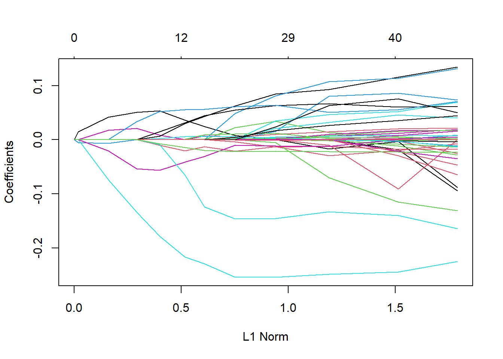
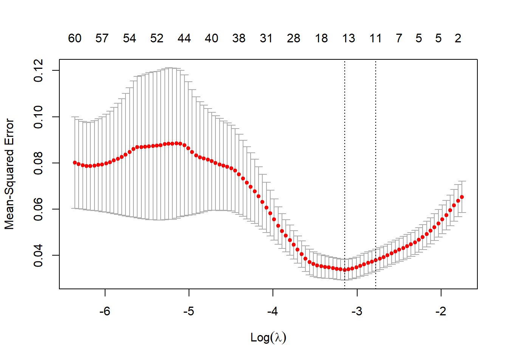
Given our cross-validation graph indicates our most important features will be somewhere between 10 and 15, we can then discuss which variables are the most important, as seen below.
top_features <- coef(cv_out, s = "lambda.1se")
top_features <- top_features[-1,]
top_features <- top_features[top_features != 0]
sort(abs(top_features), decreasing = TRUE) |> head(15) Q211 Q239 Q38 Q212 Q271 Q225
0.1967821941 0.0559778577 0.0482793422 0.0480802239 0.0364528223 0.0228602491
Q73 Q3 Q292I Q182 Q262
0.0190355263 0.0151253037 0.0107729186 0.0044779803 0.0001399158 Thus, the most impactful questions on the democracy score are as follows, alongside the graph of how important they are (with further away from 0 indicating increased important as more factors are added):
- Q211 (Openness to attending a political demonstration)
- Q239 (Opinion on religious law governing a country)
- Q38 (Is it a child’s duty to take care of a sick parent?)
- Q212 (Openness to joining unofficial strikes)
- Q271 (If the respondent is living with their parents)
- Q225 (Frequency of opposition candidates prevented from running)
- Q73 (Confidence in country’s parliament)
- Q3 (Importance of leisure time)
- Q292I (Belief politicians are incompetent or ineffective)
- Q182 (Is homosexuality justifiable?)
- Q262 (Age)
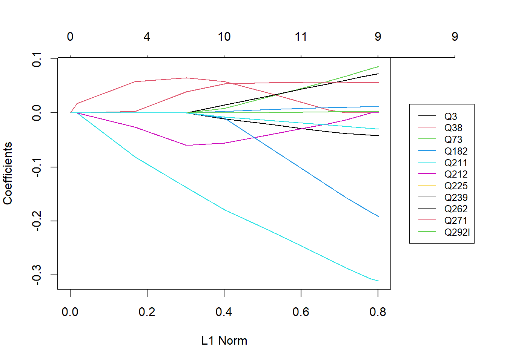
Many of these reflect core foundations of democracy, but there are some that seem more cultural. We can see notable trends in political demonstrations highly correlating with overall level of electoral democracy; Q211 and Q212 are among the first variables given coefficients, and Q211 has the largest overall effect. This makes sense, as generally, an increased level to take public action for political reasons would increase the level of accountability leaders have to their people.
Additionally, Wave 7 denotes variables like confidence in parliament, belief politicians are incompetent or ineffective, and frequency of opposition candidates being prevented from running. These all directly tie into whether electoral democracy is healthy, as if opposition candidates are not allowed to run, overall level of democracy decreases, and the last of these variables is one of the metrics V-DEM also measures to indicate level of electoral democracy.
Finally, the belief that the government and its actors may be ineffective make sense to discuss both electoral democracy and backsliding. As a population’s trust of its government falls, it often polarizes and seeks anti-system candidates, resulting in an increased likelihood of a potential autocrat’s election.
Modeling
To test if I can predict electoral democracy levels and backsliding, I decided to use decision trees, in an attempt to classify based on the different variables we got from Lasso. I tested two trees, finding that there is no major difference between RandomForest and XGBoost for trees, as seen below:
wf_set <- workflow_set(
preproc = list(rec),
models = list(
xgboost = model_xgboost,
random_forest = model_rf100)
)
wf_set_fitted <- workflow_map(wf_set, "fit_resamples", resamples = cv_folds)
wf_set_fitted |> collect_metrics()# A tibble: 4 × 9
wflow_id .config preproc model .metric .estimator mean n std_err
<chr> <chr> <chr> <chr> <chr> <chr> <dbl> <int> <dbl>
1 recipe_xgboost Prepro… recipe boos… rmse standard 0.160 5 0.0266
2 recipe_xgboost Prepro… recipe boos… rsq standard 0.583 5 0.122
3 recipe_random_fo… Prepro… recipe rand… rmse standard 0.172 5 0.0211
4 recipe_random_fo… Prepro… recipe rand… rsq standard 0.606 5 0.0954However, I will use XGBoosted trees to focus on the variables, creating 500 trees in an attempt for increased accuracy. I also plan on tuning for the learning rate hyperparameter. Below are the results for my initial model. I will then get the best fit and use it to make our final predictions, seen compared to our predictions in the graph below. The red like is a perfect prediction, that is, the prediction is the same as the actual value.
xg_grid <- grid_regular(learn_rate(), levels = 5)
model_xgboost_tune <- boost_tree(trees = 500, mtry=5, learn_rate = tune()) |>
set_mode("regression") |>
set_engine("xgboost")
wf <- workflow() |>
add_model(model_xgboost_tune) |>
add_recipe(rec)
model_res <- wf |>
tune_grid(resamples = cv_folds,
grid = xg_grid,
control = control_grid(save_pred = TRUE))
collect_metrics(model_res)# A tibble: 10 × 7
learn_rate .metric .estimator mean n std_err .config
<dbl> <chr> <chr> <dbl> <int> <dbl> <chr>
1 0.0000000001 rmse standard 0.254 5 0.0111 Preprocessor1_Model1
2 0.0000000001 rsq standard NaN 0 NA Preprocessor1_Model1
3 0.0000000178 rmse standard 0.254 5 0.0111 Preprocessor1_Model2
4 0.0000000178 rsq standard NaN 0 NA Preprocessor1_Model2
5 0.00000316 rmse standard 0.254 5 0.0111 Preprocessor1_Model3
6 0.00000316 rsq standard 0.582 5 0.109 Preprocessor1_Model3
7 0.000562 rmse standard 0.227 5 0.0126 Preprocessor1_Model4
8 0.000562 rsq standard 0.574 5 0.106 Preprocessor1_Model4
9 0.1 rmse standard 0.184 5 0.0261 Preprocessor1_Model5
10 0.1 rsq standard 0.500 5 0.0909 Preprocessor1_Model5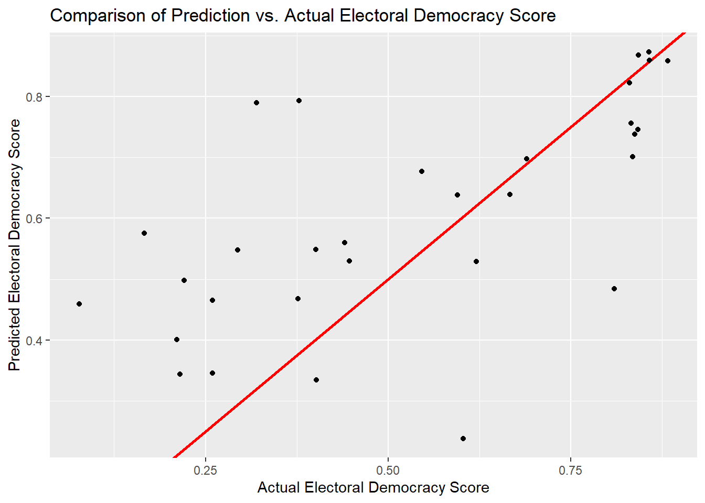
Seemingly, there is still a large amount of variation in our model, likely due to a low sample size. A larger sample could predict better - as the higher electoral democracy scores are a bit more precise - though there is no way to get this data, as the questions on the World Values Survey are inconsistent.
I will also attempt to run the model on the full data, in case we missed any parameters. However, as seen below, there is no significant difference outside of random shifts due to splitting the entire data.
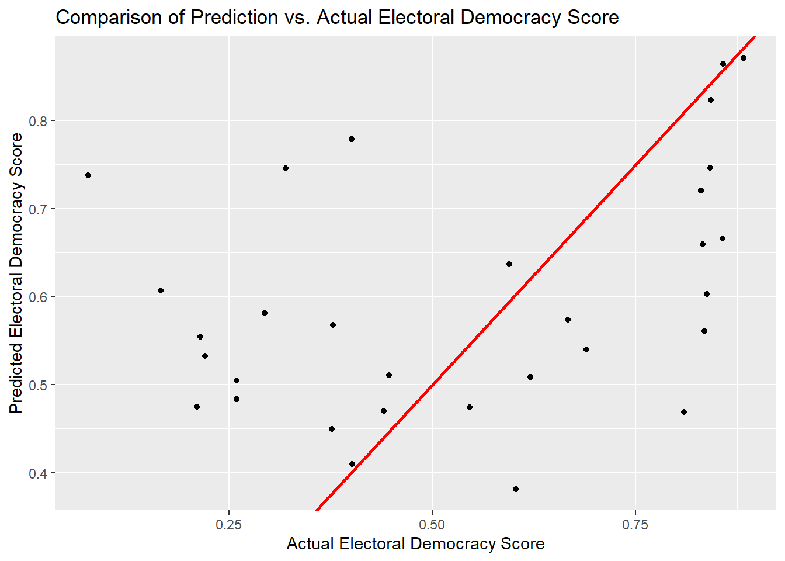
I also will be testing this model on two more variables: the difference in electoral democracy score, which indicates backsliding, and the Boolean variable indicating if a state is in a backsliding episode. Below is the prediction for difference in electoral democracy score.
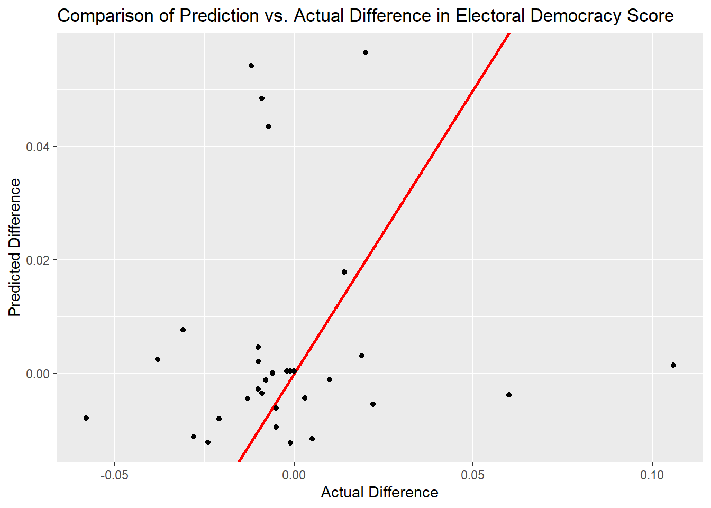
Seemingly, the model did decently for differences in electoral democracy score, but that may be because the actual differences are close to zero, making it easy for the model to predict. Additionally, we can see if the model predicts if a state is in an episode of backsliding, with the ROC Curve below
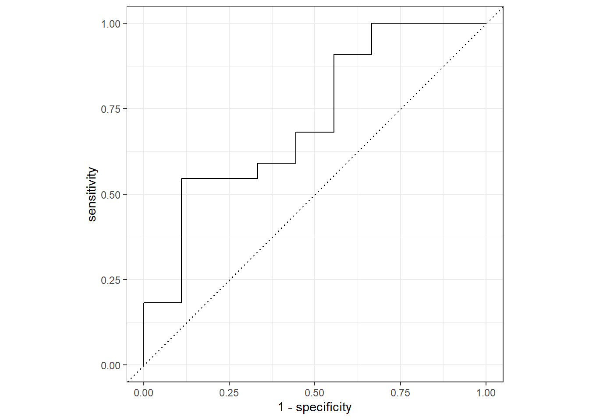
final_class |> collect_metrics()# A tibble: 3 × 4
.metric .estimator .estimate .config
<chr> <chr> <dbl> <chr>
1 accuracy binary 0.645 Preprocessor1_Model1
2 roc_auc binary 0.283 Preprocessor1_Model1
3 brier_class binary 0.297 Preprocessor1_Model1Arguably, this data is little better than random selection, with large steps indicating a small sample size and not much else. With a 64.5% accuracy, it may be marginally better than pure random selection, but likely not by a significant amount.
Discussion
While the global shift to autocracy is bolstered by an overall frustration in democratic institutions, it is by no means the only factor. This research confirms the theoretical claim that backsliding is correlated with an increase in frustrations with democratic institutions, but offers other potential variables like democratic activism and is not a useful predictive model.
Below are the various VIP plots for each model. Here, we can see the various questions among each graph which may be the most important.
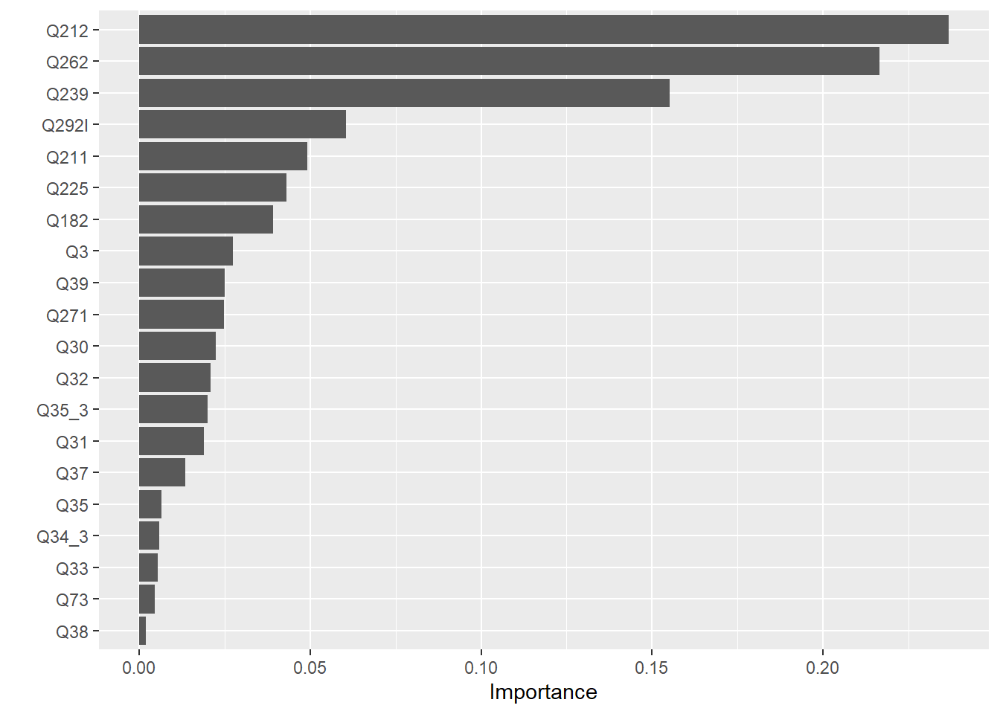
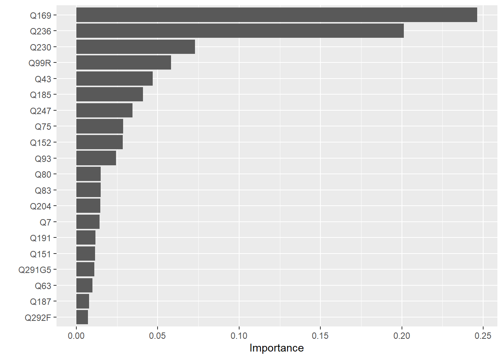
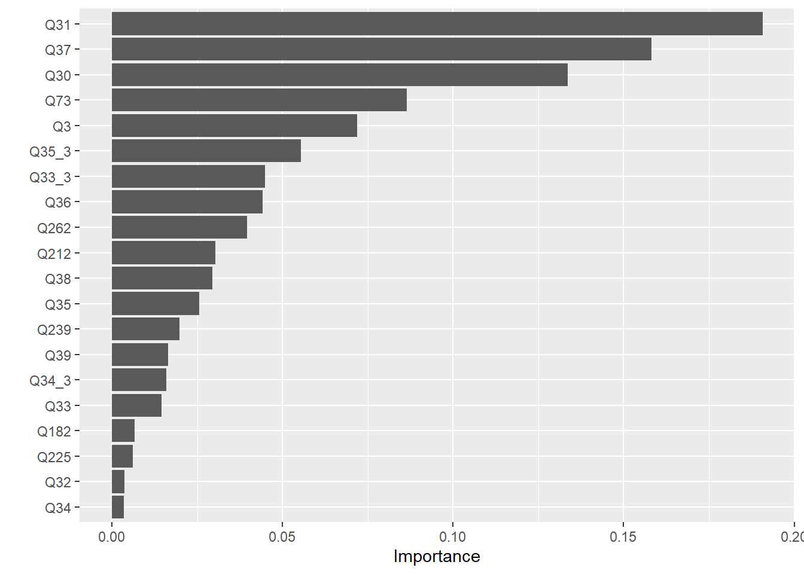
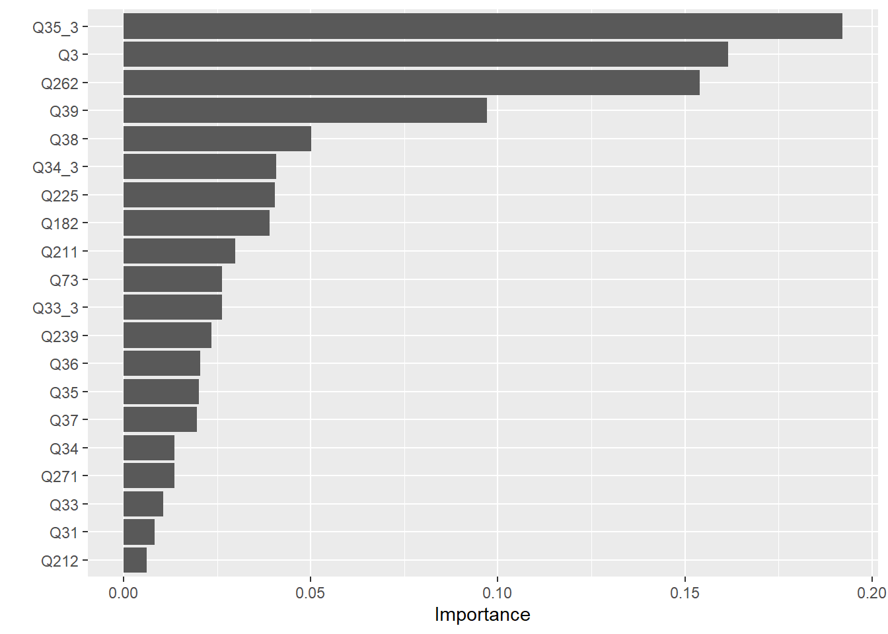
The most important features for each model (above 0.1 importance) are as follows:
- Electoral Democracy Score:
- Q212 (Political Action: Joining Unofficial Strikes)
- Q211 (Political Action: attending lawful/peaceful demonstrations)
- Q239 (Opinion on religious law)
- Q262 (Age)
- Electoral Democracy Score (with all parameters):
- Q291UN3 (The UN usually acts in its own interests)
- Q209 (Political Action: signing a petition)
- Q219 (Political Action Online: encouraging others to take action)
- Difference in ED Score:
- Q33_3 (Jobs Scarce: Men should have more right to a job than woken)
- Q73 (Confidence in Parliament)
- Q3 (Important in Life: leisure time)
- Q31 (Men make better business executives than women)
- Q35_3 (Problem if men have more income than women)
- Whether a state is in a backsliding episode:
- Q35_3 (Problem if men have more income than women)
- Q3 (Important in Life: leisure time)
- Q39 (People who don’t work turn lazy)
- Q262 (Age)
My initial hypothesis of frustration in institutions causing backsliding seems to somewhat be important, as confidence in a state’s parliament is important in the model predicting difference in electoral democracy score, and is flagged in the Lasso prediction, but otherwise, it is refuted. Instead, gender issues frequent those that are important in differences in electoral democracy score and backsliding episodes. However, gendered questions making backsliding more or less likely does make make sense, as increasing gender gaps drove Donald Trump - someone who, under his first term, ushered in a period of backsliding - to victory in November 2024.7
However, these results present an additional correlation: that of democratic activism. In both electoral democracy models, political activism proved somewhat important multiple times. This correlation somewhat tracks with the fact that free speech has more restrictions in more autocratic regimes, but the questions ask if someone is willing to join in the political action, so those states with higher proportions of people willing to resist likely are more democratic as a result.
Conclusion
Thus, the level of democracy in a state - at least to some extent - is affected by the values of its population. If people are dissatisfied with the government and will rarely take political action, an autocratic regime is more likely, and an increased paternal bias inside a state correlates with backsliding episodes. Using these correlations, we may be able to predict backsliding for future states, furthering our understanding of this shift from democracy in an ever-changing world.
With more resources and time, I may have been able to improve the model with an increase in data by asking questions like those on the World Values Survey and gathering an eighth wave of data, effectively doubling my data set. My challenge - and the one that impacted my results the most - was a lack of data, since the WVS is taken once every few years in a single country, and has different questions in each wave. Due to this, I could only effectively use one wave of data for modeling, creating difficulties in my model’s overall viability. If I could gather a new set of responses to these questions, I would be able to use that data to increase my model’s accuracy, potentially giving different results and predicting backsliding episodes more effectively.
References
Carothers, Thomas, and Benjamin Press. “Understanding and Responding to Global Democratic Backsliding.” Carnegie Endowment for International Peace, October 2022.
Cooley, Alexander, and Daniel Nexon. Exit from Hegemony: The Unraveling of the American Global Order. Oxford, New York: Oxford University Press, 2020.
Goldmacher, Shane, and Lisa Lerer. “Donald Trump Returns to Power, Ushering in New Era of Uncertainty.” The New York Times, November 2024.
Haggard, Stephan, and Robert Kaufman. Backsliding: Democratic Regress in the Contemporary World. Elements in Political Economy 9. Cambridge University Press, 2021.
———. “The Anatomy of Democratic Backsliding.” Journal of Democracy 32, no. 4 (2021): 27–41.
Levitsky, Steven, and Daniel Ziblatt. How Democracies Die. First edition. New York: Crown, 2018.
Meyerrose, Anna M. “International Sources of Democratic Backsliding.” In Routledge Handbook of Illiberalism. Routledge, 2021.
———. “The Unintended Consequences of Democracy Promotion: International Organizations and Democratic Backsliding.” Comparative Political Studies 53, no. 10-11 (September 2020): 1547–81. https://doi.org/10.1177/0010414019897689.
Nord, Marina, Martin Lundstedt, David Altman, Fabio Angiolillo, Cecilia Borella, Tiago Fernandes, Lisa Gastaldi, Ana Good God, Natalia Natsika, and Staffan Lindberg. “Democracy Report 2024: Democracy Winning and Losing at the Ballot.” University of Gothenburg: V-Dem Institute, March 2024.
Footnotes
Marina Nord et al., “Democracy Report 2024: Democracy Winning and Losing at the Ballot” (University of Gothenburg: V-Dem Institute, March 2024).↩︎
Stephan Haggard and Robert Kaufman, Backsliding: Democratic Regress in the Contemporary World, Elements in Political Economy 9 (Cambridge University Press, 2021); Steven Levitsky and Daniel Ziblatt, How Democracies Die, First edition (New York: Crown, 2018).↩︎
Stephan Haggard and Robert Kaufman, “The Anatomy of Democratic Backsliding,” Journal of Democracy 32, no. 4 (2021): 27–41.↩︎
Alexander Cooley and Daniel Nexon, Exit from Hegemony: The Unraveling of the American Global Order (Oxford, New York: Oxford University Press, 2020).↩︎
Thomas Carothers and Benjamin Press, “Understanding and Responding to Global Democratic Backsliding” (Carnegie Endowment for International Peace, October 2022).↩︎
Anna M. Meyerrose, “International Sources of Democratic Backsliding,” in Routledge Handbook of Illiberalism (Routledge, 2021); Anna M. Meyerrose, “The Unintended Consequences of Democracy Promotion: International Organizations and Democratic Backsliding,” Comparative Political Studies 53, no. 10-11 (September 2020): 1547–81, https://doi.org/10.1177/0010414019897689.↩︎
Shane Goldmacher and Lisa Lerer, “Donald Trump Returns to Power, Ushering in New Era of Uncertainty,” The New York Times, November 2024; Levitsky and Ziblatt, How Democracies Die.↩︎